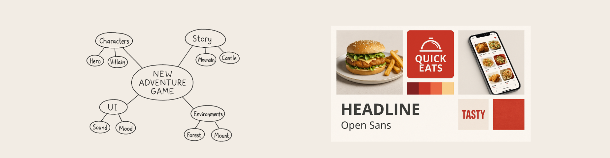

Mind maps and mood boards are early planning tools that help you explore ideas
before you commit to final designs. A strong mind map shapes your content; a strong mood board
shapes your visual style.
What Are Mind Maps and Mood Boards?
In R093 you must understand how mind maps and mood boards are used
as part of the pre-production process for media products such as websites, games, animations,
adverts and print products.
- Mind maps – show ideas, topics and content linked together.
- Mood boards – show the visual style using images, colours, textures and fonts.
Why They Matter
- They let you experiment with ideas before you spend time on detailed documents.
- They help you communicate concepts to clients or team members.
- They support later documents such as work plans, scripts, storyboards and wireframes.
Mind Maps – Planning Content and Ideas
A mind map starts with a central idea and branches out into related topics and sub-topics.
It is used to plan what content will go into your media product.
Key Features of a Mind Map
- Central node – the main topic or project name.
- Main branches – key areas such as audience, content, style, platforms and resources.
- Sub-branches – detailed ideas, features or examples.
- Keywords – short phrases rather than long sentences.
- Colour and grouping – similar ideas grouped and sometimes colour-coded.
How Mind Maps Help
- Generate lots of ideas quickly.
- Show links between different aspects of the project.
- Highlight gaps where more research or ideas are needed.
- Provide a reference when creating scripts, storyboards and work plans.
Exam Tips for Mind Maps
- Be ready to identify weaknesses in a poor mind map (e.g. no audience branch, too few ideas).
- Be prepared to suggest improvements (add branches, sub-branches, annotations, colour-coding).
- Use the term “pre-production document” and link your points to the project brief.
Mood Boards – Planning Look and Feel
A mood board sets out the visual style of a project using reference images,
colours, textures and type examples. It gives a quick impression of the overall “vibe” of
the product.
Key Features of a Mood Board
- Reference images – photos, illustrations, UI screenshots, logos.
- Colour swatches – sample colours or palette ideas.
- Textures and patterns – e.g. paper, metal, neon, glitch effects.
- Typography samples – example headings or font styles.
- Keywords – short notes about mood (e.g. “clean”, “retro”, “futuristic”).
How Mood Boards Help
- Give clients and team members a quick sense of the style you are aiming for.
- Help ensure consistency across screens, pages and products.
- Provide inspiration for later design stages, such as layouts and graphics.
Legal and Practical Considerations
- Reference images on a mood board are usually for inspiration only, not final use.
- Final products must use licensed, original or royalty-free assets.
- Mood boards can be created digitally or physically, but should be stored and labelled clearly.
Games to Practise Mind Maps and Mood Boards
These games help you spot strong and weak planning documents, improve mind maps and connect
early ideas to later stages of the project.
Pre-production
Mind Map Makeover
Fix broken mind maps by adding missing branches, grouping related ideas and improving annotations,
so they are useful for later planning documents.
9 markers
Mind maps
Improvements
Pre-production
Document Doctor
Decide when to use mind maps, mood boards, scripts, storyboards and other planning documents
for different project briefs.
MCQs
Planning docs
Components
Pre-production
Pre-Production Race
Place planning documents, including mind maps and mood boards, into the correct phase and make
sure they appear at the right time in the project.
Short answers
Workflows
Phases
9-mark trainer
9-Mark Ninja
Practise writing high-band 9-mark answers that justify why strong mind maps and mood boards
are important at the start of a media project.
9 markers
Structure
Planning
Exam Practice – Mind Maps and Mood Boards
Q1. State one purpose of a mind map in the planning of a media product. (1 mark)
Technique: Give a clear purpose such as “to generate and organise ideas”
or “to identify different content areas”.
Q2. Explain one reason why a designer creates a mood board before designing a website. (2 marks)
Technique: Make one point about how a mood board helps (e.g. choosing colours and style)
and then explain the impact on the final design or client.
Example structure: “A mood board is used to… This helps because…”
Q3. Describe three elements you would expect to see on a mood board for a horror film poster. (3 marks)
Technique: Give three distinct elements (e.g. dark colour palette, example fonts,
reference images) and keep each idea short and clear.
Q4. Explain two ways a weak mind map could cause problems later in a media project. (4 marks)
Technique: For each way, describe the weakness (e.g. missing audience branch,
very few ideas) and explain how this might affect later documents or the final product.
Q5. A small business wants to create a new interactive brochure website. Discuss how effective use of mind maps
and mood boards at the start of the project could help produce a successful final product. Provide justified
recommendations. (9 marks)
Technique: Structure your answer into clear paragraphs for mind maps and mood boards.
Explain how each tool will support audience understanding, content planning and visual consistency, then
end with a justified conclusion.
- Paragraph 1: Mind maps – planning content, navigation and features.
- Paragraph 2: Mood boards – planning colour schemes, imagery and typography.
- Paragraph 3: How both support later documents (wireframes, work plans, prototypes).
- Final paragraph: Conclusion – justify why using both tools together is most effective.
Can You Now…?
- Define mind maps and mood boards as pre-production documents.
- Identify key features of strong mind maps and mood boards.
- Explain how they support later planning and design documents.
- Use examples of mind maps and mood boards in exam answers with clear explanation and justification.